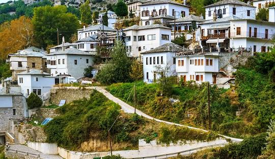
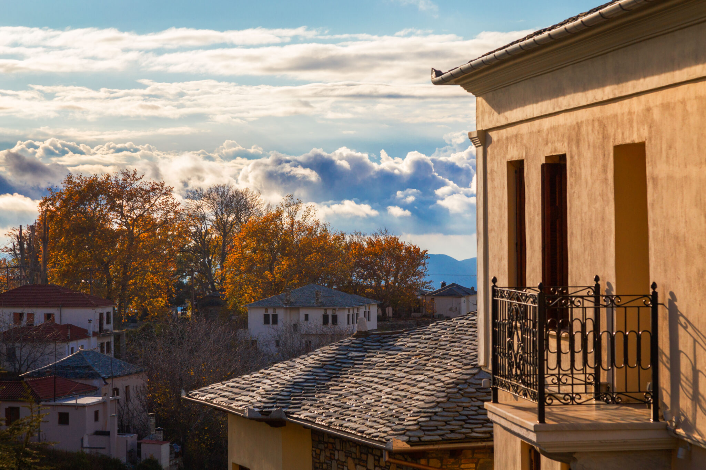
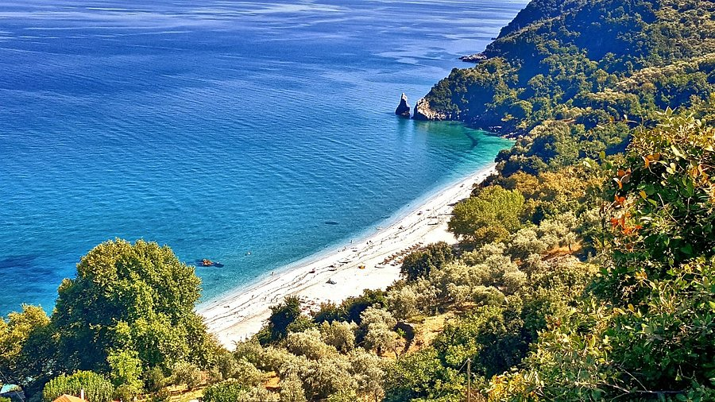
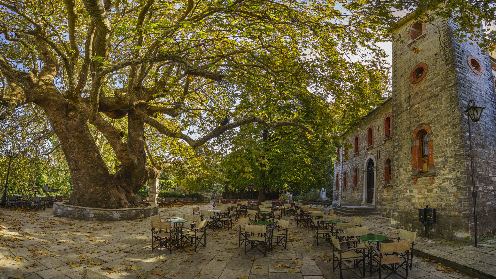
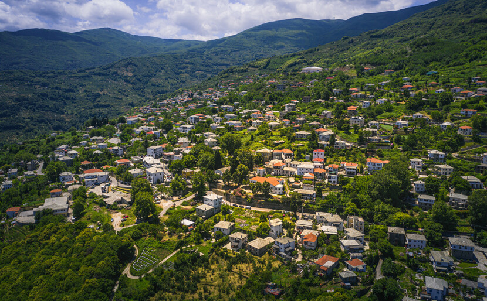
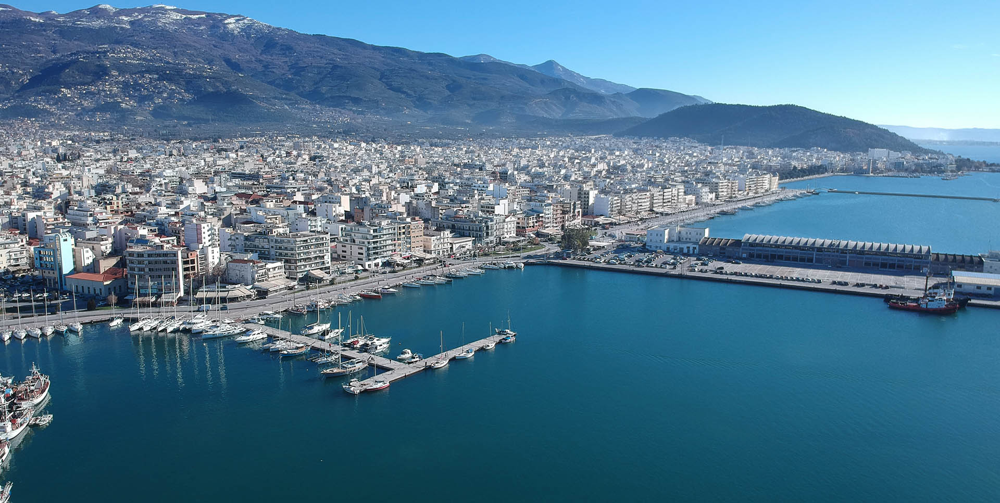

Μια μαγευτική περιοχή στην καρδιά της Θεσσαλίας
Το Πήλιο είναι ένα όμορφο βουνό στην Ελλάδα, που συνδυάζει τη φυσική ομορφιά με την ιστορία και την παράδοση. Είναι γνωστό για τα παραδοσιακά χωριά του, τις υπέροχες παραλίες και τα δάση του με τα αιωνόβια δέντρα.

Μία από τις πιο όμορφες και παραδοσιακές κοινότητες του Πηλίου με υπέροχες βίλες και στενά δρομάκια.

Εκπληκτική θέα στο Αιγαίο και παραδοσιακή αρχιτεκτονική που συνδυάζει την ιστορία και την ομορφιά του βουνού.

Μοναδικές παραλίες όπως η Χορευτού και η Μυλοπόταμος, όπου η φύση και η θάλασσα δημιουργούν ακαταμάχητους συνδυασμούς.

Ζήστε τη χαρά της πεζοπορίας στην Τσαγκαράδα, αλλά και την ευρύτερη περιοχή του ανατολικού Πηλίου, σε ένα τόπο ιδανικό για πεζοπορικές διαδρομές, μέσα σε καλντερίμια και μονοπάτια που χάνονται στα δάση του βουνού.

Το χωριό είναι προορισμός για όλες τις εποχές του χρόνου – αργά την άνοιξη και το καλοκαίρι, βέβαια, θα απολαύσετε καλύτερα τη φύση και τις παραλίες του.

Η πεζοδρομημένη παραλιακή λεωφόρος Αργοναυτών και το επιβατικό λιμάνι στο δυτικό άκρο της, με την εκπληκτική θέα προς το ανοικτό πέλαγος, είναι το δημοφιλέστερα σημεία συνάντησης και περιπάτου.